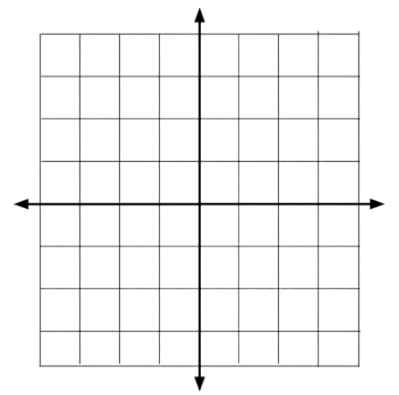

Distance on a Graph
Introduction
Distance is the quantification of how far two objects are apart from each other. This is no different from two dots on a graph like this…

This is a graph which is used to plot lines or dots to show information. Distance on a graph is most commonly shown through two dots at different points of the graph…
The first dot is at (-1, 2) while the other is at (2, -3). The formula for finding the distance of these two dots is this…
D = √ ((x2 + x1)2 + (y2 + y1)2)
In this equation, "D" represents the distance. You also can't cancel out the two sqaured values. Also to note that this is why distance cannot be negative since a negative value
sqaured equals a positive value in this formula.
But for this example, let's say that the dot at the bottom is the second dot and the other is the first dot. Now that we know that we can find the distance…
D = √ (2 - (-1))2 + (-3 - 2)2
D = √ (2 + 1)2 + (-5)2
D = √ (3)2 + 25
D = √ 9 + 25
D = √ 34
The distance of these two dots is the square root of 34 which can be left as is or can be calculated.
Another example would be this…
Find the distance between these two dots
(23, 12)
(9, 36)
We can see the two dots locations, the second dot is (9, 36) while the other is the first dot. We can put these values into the formula…
D = √ ((x2 + x1)2 + (y2 + y1)2)
D = √ ((9 - 23)2 + (36 - 12)2)
D = √ ((-14)2 + (24)2)
D = √ (196 + 576)
D = √ (772)
The final distance between the two dots is the square root of 772.